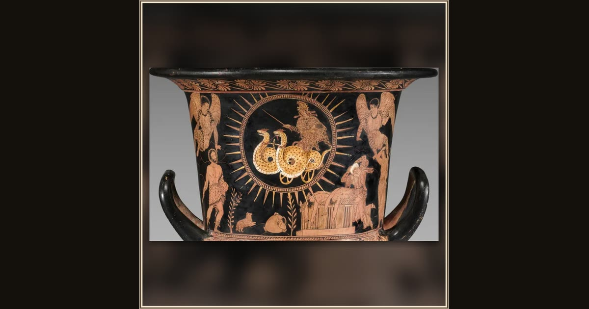

Red-Figure Calyx-Krater (Mixing Vessel): Medea in Chariot (A); Telephos with Baby Orestes (B)
Policoro Painter (South Italian, Lucanian, active c. 400 BCE) · c. 400 BCE · cma
On this Lucanian vase Medea drives off in a chariot drawn by serpents, framed by a sunburst, as she appears in mid air with her sons' bodies at the play's close. (1315) Explore its place in Euripides's Plays, Medea, line 1300.